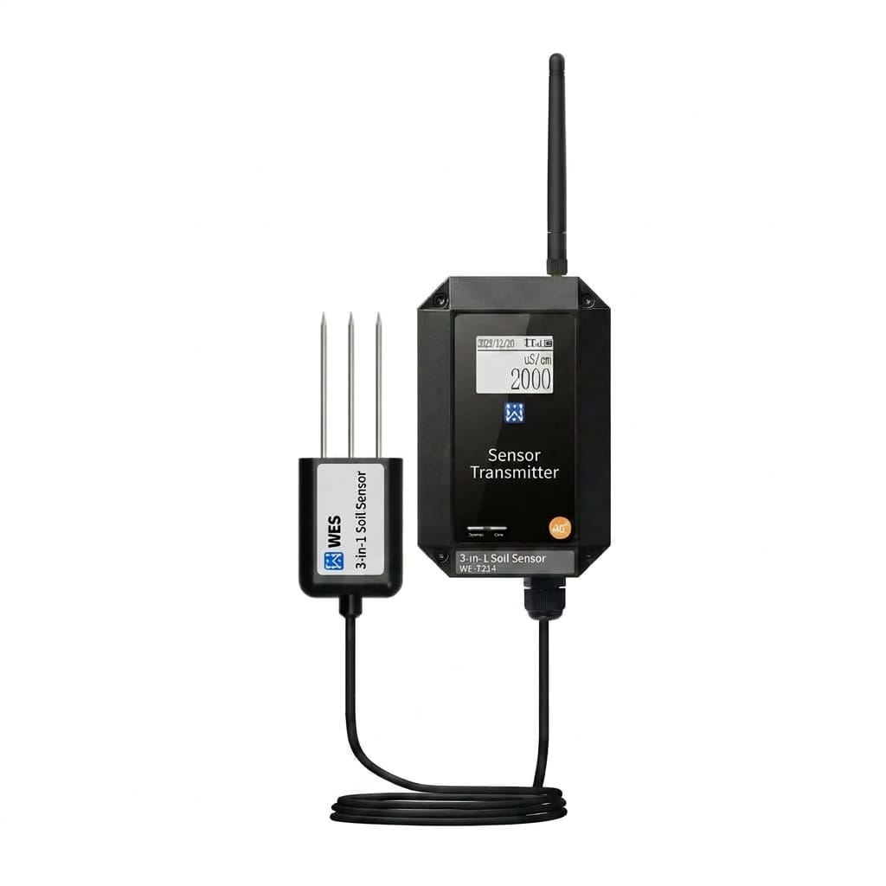

WE-T214 3-in-1 Soil Sensor Transmitter
A rugged, field-ready transmitter for precision agriculture. Simultaneously monitors soil temperature, volumetric moisture content, and electrical conductivity (EC). Supports dual 4G and LoRa connectivity for reliable data backhaul in remote areas.
English PDF manual. For technical support or customized OEM versions, email us from Contact Information.

Key Highlights
Precision monitoring meets rugged industrial design.
3-in-1 Precise Sensing
Monitors Soil Temperature, Volumetric Moisture Content, and Electrical Conductivity (EC) simultaneously with a high-accuracy triple-probe sensor.
Dual 4G & LoRa
Flexible connectivity with 4G LTE (MQTT/HTTP) and LoRa (up to 5km range), ensuring data reporting even in extremely remote locations.
GNSS Positioning
Built-in GPS/GLONASS/BDS support for automated asset tracking and mapping of soil data across large plantations.
Ultra-long Endurance
Powered by a 19,000mAh high-capacity lithium battery or optional 40W solar panel for years of maintenance-free operation.
Rugged & Reliable
IP67-rated host and IP68-rated probe enclosure. Engineered for harsh agricultural environments from -40°C to +85°C.
Real-time LCD Display
On-site data viewing via a high-contrast display. View temperature, humidity, and EC levels directly without a mobile device.
Product Gallery
Detailed views (Scroll thumbnails to browse).
Product Video
Quick look at the WE-T214 3-in-1 Soil Sensor Transmitter in action.
Specifications
Technical parameters based on the product manual.
| Measured Variables | Soil Temperature, Soil Moisture, Soil Conductivity (EC) |
|---|---|
| Temperature Range | -40°C to +85°C (Accuracy: ±0.5°C from 0-40°C) |
| Moisture Range | 0 to 100% Volumetric Water Content (Accuracy: ±3%) |
| Conductivity (EC) | 0 to 20 mS/cm (Accuracy: ±3% FS) |
| LoRa Connectivity | 410.125~490.125MHz; 22dBm Tx power; -147dBm sensitivity; 5km LOS range |
| 4G Connectivity | LTE FDD B1/3/5/7/20/28; Supports MQTT, HTTP, and WEST cloud protocols |
| Positioning (GNSS) | GPS / GLONASS / BDS / Galileo / QZSS |
| Power Options | 9-30V DC (Typ 24V), 19,000mAh Internal Li-battery, or 40W Solar Panel |
| Sampling / Reporting | Configurable from 1 minute to 18 hours |
| Enclosure Rating | Transmitter Host: IP67; Sensor Probe: IP68 |
| Dimensions | 121 x 78 x 51.4 mm (Main unit excluding antenna and cable) |
| Weight | 190g (Main unit) |
Typical Applications
Optimized for diverse agricultural and environmental monitoring needs.
Smart Agriculture
Automated soil monitoring for greenhouse farming, orchards, and open fields to optimize irrigation cycles and fertilizer application based on real-time EC and moisture data.
Environmental Science
Long-term research on soil salinity and moisture dynamics in ecological conservation areas, leveraging LoRa for data transmission across remote terrain.
Standard Package
Standard configuration for the WE-T214.
| # | Item | Qty |
|---|---|---|
| 1 | 3-in-1 Soil Sensor Transmitter (WE-T214 Host) | 1 |
| 2 | Soil Temperature/Moisture/EC Probe | 1 |
| 3 | 4G / LoRa Antenna | 1 |
| 4 | Printed User Manual & Certificate | 1 |
Downloads
Access technical documentation for the WE-T214 3-in-1 Soil Sensor Transmitter.
Contact Information
For quotations, lead times, and technical support.
Room 1502, 15th Floor, Building 20, No. 487 Tianlin RoadShanghai, 200233, China
+86-021-33675566
ftd_sales@west-hn.com
Monday to Friday, 9:00 - 18:00